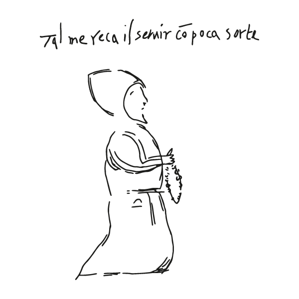
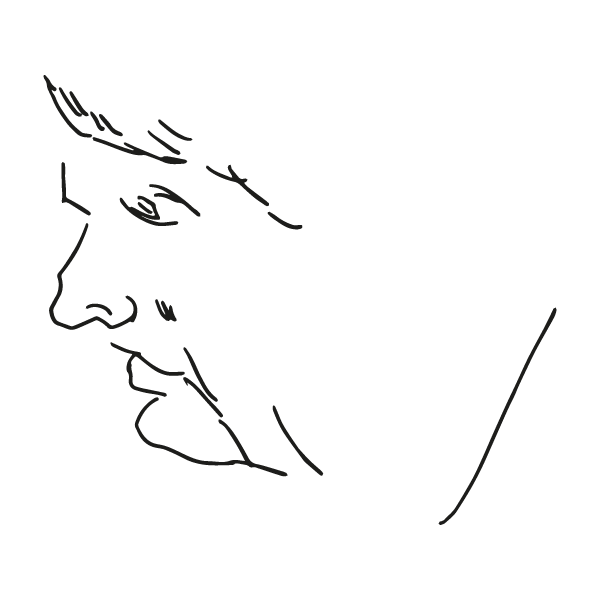
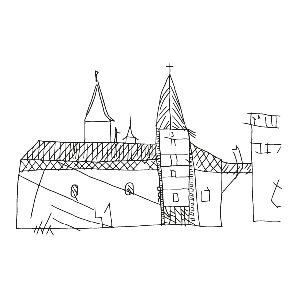
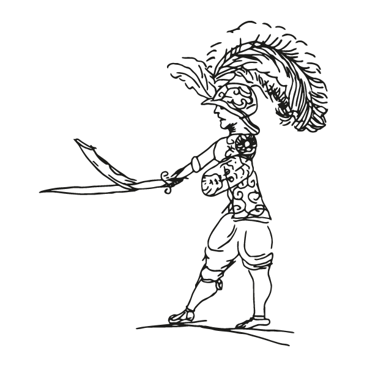
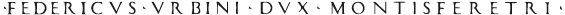

|  | STUDIARE CONSERVARE MOSTRARE |
 |
| Alcune delle scritte sui muri del Palazzo Ducale sono note da tempo: ne parla anche Giorgio Batini nel suo libro L’Italia sui muri (1968). Solo a partire dagli Anni Novanta, tuttavia, Raffaella Sarti (Università di Urbino Carlo Bo) ha avviato una ricognizione sistematica di tale patrimonio, con un lavoro di schedatura, trascrizione e interpretazione presentato in varie pubblicazioni. Di recente, un lavoro di schedatura delle scritte e dei disegni con sofisticate tecniche fotografiche è stato avviato da Manuele Marraccini nella sua tesi di laurea in fotografia per i beni culturali (2015), svolta presso l’Istituto Superiore per le Industrie Artistiche (Isia) sotto la guida di Angelo Raffaele Rubino (Isia, relatore), Raffaella Sarti (Università di Urbino Carlo Bo, correlatrice) e Matteo Dellepiane (Isia, correlatore). |  | A partire da tali lavori è nato il progetto “La pietra racconta. Un Palazzo da leggere“. Il progetto scaturisce da una convenzione tra la Galleria Nazionale delle Marche e l’Isia, con la direzione scientifica dell’Università di Urbino Carlo Bo. Esso mira a compiere una ricognizione completa delle scritte e dei disegni incisi sui muri del palazzo, a fotografarli e scansionarli, a renderli accessibili a un vasto pubblico di studiosi e di “curiosi” organizzando un percorso permanente dentro il palazzo, predisponendo un virtual tour e allestendo mostre che offrano ai visitatori un’interessante ed emozionate esperienza multimediale. |
 |
La mostra offre ai visitatori la possibilità di compiere un sorprendente percorso alla scoperta del ricchissimo patrimonio di scritte e disegni tracciati sugli stipiti e gli architravi di porte e finestre, sulle colonne e sui muri del Palazzo. Scritte e disegni, che spaziano su un arco di cinque secoli e mezzo, sono in gran parte incisi con oggetti appuntiti, sono cioè graffiti; ma ce ne sono anche a carboncino, sanguigna, matita, biro. Le scritte sono in italiano, latino, francese, tedesco, spagnolo… . Ora sono rozze e incerte, ora sono opere di calligrafia. Alcune recano solo un nome, a volte datato; altre raccontano eventi che vanno dalla vita quotidiana del Palazzo a notizie di politica internazionale; alcune ricordano amori o conflitti; altre esprimono sentenze e giudizi moraleggianti… Studiosi e semplici “curiosi” ne resteranno affascinati e sentiranno fortemente vicini gli uomini e le donne che, per secoli, si intestardirono a lasciare tracce delle loro vite sui muri |  |
|  |